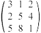

Matematicko programiranje
13.12.'97.
1. Za t Î
[0,2] resiti
(max) (- t - 3) x1 + (t + 1) x2
+ (3t - 7) x3 + (3 - t)x4,,
p.o. x2 - x3 + x5
= 1, - x1 - x3 + x4
+ x6 = 2, x1 - x5
+ x6 £ 2 , x1,x2,x3,x4,x5,x6
³ 0.
2. Transportni problem Pl ima matricu:
| 9 | 12 | 9 | 6 | 5 |
| 7 | 3 | 7 | 7 | 6 |
| 6 | 6 | 9 | l | 11 |
| 4 | 4 | 7 | 7 | min |
a) za = 8 resiti problem.
b) Za koje vrednosti parametra l optimalno
resenje iz tacke a) ostaje optimalno?
3. Naci sva optimalna resenja problema
(min) cos x + cos y + cos z - sin x - sin y - sin z
p.o. x + y + z £ p/2 , x,y,z ³
0.
Obrazloziti postupak.
4. (N-smer) Odrediti prvu iteraciju metode
gradijenta primenjene na problem
(max) ln x + 2 ln y + 3 ln (6 - x - y) iz tacke (2,2)
4. (V-smer) Odrediti strategiju oba igraca sledece matricne igre: 